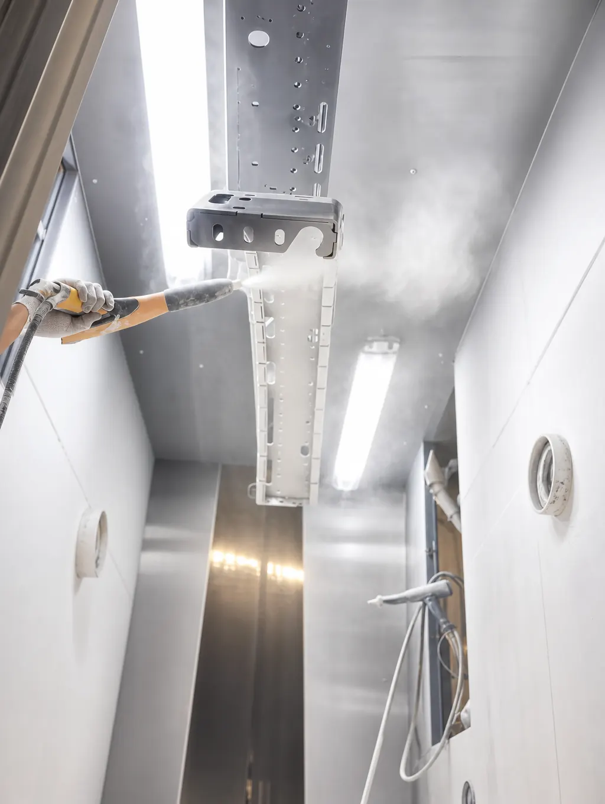

Los colores de pintura electrostática abarcan prácticamente cualquier tono: desde los grises y negros industriales hasta rojos, azules, dorados y efectos metálicos. El color lo define el polvo del fabricante y se especifica con una referencia, normalmente de la carta RAL.
En esta guía te explicamos cómo se especifica el color, cómo cambia según el acabado, qué tonos se usan más por industria y cómo elegir el de tu pieza. Si apenas conoces el proceso, empieza por qué es la pintura electrostática y cómo funciona.
En Steel Paint somos maquiladores: no fabricamos la pintura, aplicamos el polvo del fabricante que corresponda a tu especificación.
¿Qué colores hay en pintura electrostática?
La gama es muy amplia. Los fabricantes de polvo ofrecen colores en varias resinas y acabados, y en Steel Paint trabajamos con polvos de AkzoNobel, Axalta, Sherwin Williams, Tiger y Vitracoat. Estas son las familias principales:
- Colores sólidos: grises, negros, blancos, azules, rojos y verdes, entre muchos otros. Son la base de la mayoría de las piezas industriales.
- Metálicos y efectos especiales: polvos con reflejo metálico, destellos u otros efectos decorativos. Los detallamos más abajo, y la textura y el brillo los desarrollamos en nuestra guía de tipos de acabados en pintura electrostática.
Que un color exista en catálogo no garantiza que esté disponible en la resina y el acabado que necesitas. Por eso conviene confirmarlo antes de cotizar.
Carta RAL y otros sistemas para especificar el color
Para que tú y tu maquilador hablen del mismo color hace falta una referencia. Estas son las más comunes:
- RAL Classic: es el sistema más usado en pintura industrial y arquitectónica. Cada color tiene un número de cuatro dígitos, como RAL 7035 (gris claro) o RAL 9005 (negro intenso).
- Pantone: está pensado para impresión y diseño de marca. Si tu identidad corporativa usa Pantone, normalmente se busca el RAL o el polvo más cercano, y la correspondencia es aproximada, no exacta.
- Códigos del fabricante: cada fabricante de polvo tiene su propia nomenclatura. Es la referencia más precisa para repetir un color, junto con su ficha técnica.
- Muestra física o fotos: una pieza, placa o imagen del color que buscas sirve para comunicar el tono que quieres. Con esa información, el maquilador revisa con el fabricante del polvo si existe un color disponible que corresponda a la referencia.
RAL, el organismo que mantiene el sistema, publica las cartas oficiales de RAL como referencia.
Una advertencia práctica: el color en pantalla no es el color de la pieza. Las pantallas y las impresiones cambian el tono, así que apóyate en una referencia o en la ficha del fabricante, no en una captura.
Cómo cambia el color según el acabado
El mismo color se ve distinto según el brillo y la textura. No es un defecto: es la forma en que la superficie refleja la luz.
Si dos piezas van a convivir en un ensamble, define el color y el acabado juntos.
Esta tabla resume los efectos generales. Son orientativos: la ficha técnica de cada polvo manda.
| Acabado | Cómo se percibe el color | Qué tener en cuenta |
|---|---|---|
| Brillante | Más saturado y profundo | Resalta marcas y golpes |
| Satinado | Equilibrado, poco reflejo | Uso general e industrial |
| Mate | Más suave y apagado | Reduce reflejos visibles |
| Texturizado | Más oscuro y menos uniforme | Disimula imperfecciones del metal |
| Metálico | Cambia con el ángulo de luz | Pide aplicación muy uniforme |
La resina también influye. En exteriores, algunas pierden color y brillo con el sol, y lo explicamos en nuestra guía de tipos de pintura en polvo.
Colores de pintura electrostática más usados por industria
No hay un color universal, pero sí tendencias generales por industria:
- Automotriz y autopartes: el color lo define la especificación del cliente, con énfasis en la uniformidad de un lote a otro. Los negros y grises son frecuentes en soportes y componentes estructurales. Lo vemos en la guía de la industria automotriz de Monterrey.
- Mueble metálico y herrería: blancos, negros, grises y los tonos de la línea de producto. En exterior se prefieren tonos claros o medios.
- HVAC y refrigeración: blancos y grises claros en gabinetes y carcasas, por su aspecto limpio.
- Construcción y arquitectura metálica: colores del proyecto, normalmente con una referencia RAL que define el arquitecto. Son comunes los grises y los tonos oscuros neutros.
- Metalmecánica y maquinaria: gris, negro y azul industrial como colores estándar.
- Colores de acento: rojo, amarillo, naranja y dorado, para seguridad, señalización o identidad de marca.
El negro es uno de los tonos más pedidos en casi todas las industrias.
Colores especiales: metálicos, perlados, fluorescentes y transparentes
Además de los colores sólidos, existen polvos con efectos especiales. Son conocimiento general de la industria y cada uno tiene cuidados propios:
- Metálicos: llevan partículas metálicas que dan un reflejo brillante, como en los plateados, bronces y dorados. Se usan cuando se busca un aspecto decorativo o premium. Su apariencia puede variar según el espesor, la técnica de aplicación y el ángulo de la pistola, así que las piezas que van juntas conviene pintarlas en el mismo lote y con el mismo procedimiento.
- Perlados: incluyen pigmentos tipo mica que producen un destello suave y a veces un cambio de tono según el ángulo de luz. Se usan en detalles decorativos, mobiliario y piezas visibles. Comparten el cuidado de los metálicos: el efecto es sensible a la aplicación y es difícil de retocar sin que se note.
- Fluorescentes: usan pigmentos de muy alta visibilidad, pensados para señalización, seguridad y elementos que deben verse a distancia. Su limitación principal es la exposición al sol, porque pierden intensidad con el tiempo, y por eso suelen reservarse para interiores o usos de corta exposición. Según el fabricante, algunos lucen mejor sobre una base clara.
- Transparentes: son polvos sin pigmento, o con un tinte translúcido, que dejan ver el metal o una capa de color debajo. Se usan para proteger un acabado metálico o lograr efectos translúcidos. Como no cubren, muestran los defectos de la superficie y exigen una preparación muy cuidadosa, y algunos sistemas requieren más de una capa.
La disponibilidad de estos acabados depende del fabricante del polvo. Confírmala con tu maquilador antes de cotizar y, si el efecto es importante, pide la ficha técnica del polvo.
Cómo elegir el color de tu pieza y qué datos darle a tu maquilador
Elegir el color es una decisión técnica además de estética. Estos son los criterios que más pesan:
- Dónde va la pieza: en exterior, los colores oscuros absorben más calor y los claros o medios se comportan mejor en climas de alta radiación solar como el de Monterrey. Lo detallamos en la guía de pintura electrostática para muebles metálicos de exterior.
- Qué especifica tu cliente: si tu cliente o tu proyecto ya define un RAL o un código, parte de ahí.
- Con qué va a convivir: si la pieza se ensambla con otras o se fabrica en varios lotes, usa el mismo color, acabado y fabricante de polvo.
- Cuánto se manipula: los tonos medios disimulan mejor el polvo y las marcas de uso que los muy claros o muy oscuros.
Para cotizar y confirmar la disponibilidad del color, ten a la mano estos datos:
- Referencia de color: RAL, código del fabricante o Pantone como referencia aproximada.
- Acabado: nivel de brillo y textura que buscas.
- Uso final: interior o exterior.
- Muestra o fotos: para comunicar el tono que quieres.
- Pieza: tipo de metal, medidas y cantidad.
Con eso, el maquilador revisa con el fabricante del polvo si existe un color disponible que corresponda a tu referencia y te confirma la factibilidad.
Recuerda que el color se apoya en una buena base: una mala preparación de superficie puede afectar la adhesión y el aspecto del acabado. Lo explicamos en preparación de superficie para powder coating. Y para comparar proveedores, revisa cómo elegir un maquilador de pintura en polvo en Monterrey.
Preguntas frecuentes sobre los colores de pintura electrostática
¿Qué colores hay en pintura electrostática?
Prácticamente cualquier tono: grises, negros, blancos, azules, rojos, dorados y efectos metálicos. La disponibilidad depende del fabricante del polvo, de la resina y del acabado, así que conviene confirmarla antes de cotizar.
¿Qué es la carta RAL?
Es un sistema de referencia en el que cada color tiene un número de cuatro dígitos, como RAL 7035 o RAL 9005. Se usa en la industria y la arquitectura para que todos hablen del mismo color sin ambigüedades.
¿Se puede pintar de cualquier color?
Casi cualquiera dentro de lo que ofrecen los fabricantes de polvo. Si tu referencia no coincide con un color de catálogo, el maquilador revisa con el fabricante si existe un color disponible que corresponda a ella.
¿Puedo pedir un color Pantone en pintura electrostática?
Puedes usar un Pantone como referencia, pero la correspondencia es aproximada. Pantone está pensado para impresión y diseño de marca, mientras que los polvos se fabrican con sus propios códigos y con la carta RAL como referencia común. Lo habitual es buscar el RAL o el color de fabricante más cercano, sin garantía de coincidencia exacta.
¿Cuál es el color más usado en pintura electrostática?
No hay un color universal. Los grises, negros y blancos neutros son de los más frecuentes en piezas industriales, pero en la práctica manda la especificación de tu cliente o de tu proyecto.
¿El color cambia según el acabado?
Sí. El mismo color se percibe distinto en brillante, satinado, mate o texturizado, porque cambia la forma en que la superficie refleja la luz. Por eso conviene definir el color y el acabado al mismo tiempo.
Define el color antes de cotizar
Elegir bien el color empieza por tres decisiones: la referencia (RAL o código del fabricante), el acabado que lo acompaña y el uso de la pieza, interior o exterior. Con ellas claras, evitas cambios de último momento y retrabajos por un tono que no era el esperado.
También le facilitas la cotización a tu maquilador: con una referencia, el acabado, el uso final y una forma de mostrar el tono que buscas, puede revisar con el fabricante del polvo si existe un color disponible y confirmarte la factibilidad desde el inicio.